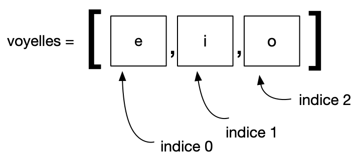

types construits
Cette page aborde les notions avancées sur les Listes. Il est nécessaire de consulter auparavant la page sur les Listes: les notions de base.
On pourra également revenir sur la page 1 : variables natives de base
Après la lecture, on traitera le TP sur les variables utilisant Pythontutor.
Les structures de données et les types construits
Les structures de données définissent la manière avec laquelle sont stockées les données dans un langage.
Les types construits, comme les listes et les dictionnaires sont contruits à partir des types de bases que l’on a déjà vus. Ce sont d’autres moyens d’organiser et d’agencer les types de base dans d’autres structures.
Types séquentiels : les listes et les tuples
Une séquence est une structure de données qui stocke une collection d’éléments dans un ordre déterminé.
Listes
Definition: Une liste est une collection ordonnée d’objets. Au niveau de la mémoire de l’odinateur, une liste porte un nom, et fait référence à des espaces mémoire pour chaque élément de liste. Ces éléments (espaces mémoires) font eux-même reference aux emplacement mémoire qui stockent les valeurs ou objets.
En python: Une liste est entourée de crochets [ ]
Les éléments contenus peuvent être de tout type.
On accède à un élément d’une liste grace à sa position, appelée indice. Le premier élément a pour indice zero.

La liste `voyelles` est une collection contenant les caractères
Un indice négatif donne accès à la liste à partir du dernier élément.
Les listes sont mutables : On peut modifier un seul de ses éléments à partir de son indice :
Ceci n’est pas possible avec le type natif str, qui, lui est un type non mutable.
Construire une liste avec une boucle
Les boucles while etfor permettent d’itérer sur les éléments d’une séquence.
Construire une liste par compréhension
Pour construire une liste par compréhension, on place une boucle bornée à l’INTERIEUR les crochets. Cela créé un éléments dans la matrice pour chaque valeur de l’itérable
On peut combiner les expressions entre les crochets, en ajoutant par exemple une condition. Ainsi, si l’on veut uniquement le carré des nombres pairs (if i % 2 == 0):
Pour un tableau, on peut créer une liste par compréhension à l’intérieur de la première liste:
Tuples
Un tuple est entouré de parenthèses ( )
On accède à l’un des éléments à l’aide de son indice, comme pour les listes.
Par contre, le tuple est non mutable : on ne peut pas en modifier l’un de ses éléments. Il faut refaire, au besoin, une affectation complète de tout le tuple.
Mappages : les dictionnaires
Un mappage est une structure de données qui relie 2 informations ou plus, appelées paires clé : valeur. Aussi appelée table de hashage. En python, cette structure est le dictionnaire.
Un dictionnaire est entouré d’accolades { }. Les paires sont séparées par une virgule.
Par exemple, pour créer un dictionnaire non vide, on peut faire :
Mais on peut aussi ajouter chaque paire en faisant :
Dans cet exemple, les clés du dictionnaire capitales sont les pays (“France”, “Italie”…) et les valeurs sont les villes (“Paris”,“Rome”,…).
On ne peut placer comme clé d’un dictionnaire que des objets de type non mutable.
Pour accéder à une valeur, on utilise la clé comme index: capitales['France'] = 'Paris'
Pour accéder aux clés d’un dictionnaire: on utilisera les méthodes keys avec par exemple capitales.keys()
Pour accéder aux valeurs: on utilise la méthode value, avec par exemple capitales.values()
Pour accéder aux paires clé-valeurs: méthode items, avec par exemple capitales.items()
méthodes de listes
Pour commencer, rappelons comment retrouver la liste des méthodes définies sur le type list :
append
append(element) ajoute un élément en fin de liste
pop
pop() supprime le dernier élément et renvoie sa valeur.
index
index(element) retourne la position (index) de cet élément dans la liste (ou du moins la première occurence s’il y en a plusieurs).
insert
insert(index, element) insère l’élément à l’index précisé.
remove et del
remove(element) supprime un élément d’une liste. Si l’élément apparait plusieurs fois dans la liste, seule la premiere occurence est supprimée.
del liste[indice] supprime l’élément de la liste à partir de son indice.
découpe d’une liste
une découpe est une partie de liste, spécifiée à partir des indices :
copie d’une liste
Une copie d’une liste permet d’utiliser le contenu de la liste copiée sans affecter la liste d’origine (voir TP sur les variables). C’est une copie par valeurs.
Pour copier une liste, on peut :
- la découper sans mentionner les 2 indices:
- ou bien utiliser la fonction
list:
On peut alors vérifier qu’il s’agit maintenant d’une copie par valeurs :
Sans cette astuce, la copie se ferait par référence (rappelez-vous: Liste = mutable)
Trier une liste
Il y a 2 fonctions de tri :
- La fonction sorted renvoie une copie de la liste triée dans l’ordre naturel (alphanumerique) sans modifier la liste d’origine.
Puis:
- La méthode sort permet de trier la liste en place.
Choix d’un élément aléatoire dans une liste.
Il faut importer la fonction choice de la librairie random:
Affiche un élément au hasard: 1, 10, 100 ou 1000.
méthodes de dictionnaires
Les dictionnaires sont présentés à la page sur les variables
keys
méthode qui permet d’accéder aux clés d’un dictionnaire (retourne une liste de clés) :
values
méthode pour accéder aux valeurs d’un dictionnaire (retourne une liste de valeurs):
items
méthode pour accéder aux paires clé-valeurs d’un dictionnaire (retourne une liste de tuples):
copier un dictionnaire
On peut utiliser la fonction dict pour faire une copie par valeur d’un dictionnaire :
Sans cette astuce, la copie se ferait par référence (Dictionnaire = mutable)
Dataframes
Un Dataframe est un objet qui permet de mieux représenter et travailler sur les tables. C’est un outil puissant, qui necessite un apprentissage supplémentaire, comme une extension du langage python. Voir ici : towardsdatascience.com
Objets mutables et non mutables
En Python, il existe deux types d’objets: les mutables (listes, dictionnaires, sets, objets customisés, etc) et les non mutables (string, int, float, tuple, etc).
Les mutables sont ceux qu’on peut modifier après leur création. Les non mutables sont ceux qu’on ne peut pas modifier après création.
Lorsque 2 références pointent sur le même objet, ce qui est possible avec les mutables, il faut s’attendre à ce que la modification de l’un entraine celle de l’autre (effet de bord).
C’est le mot-clé IS qui va permettre de tester si 2 noms pointent vers la même réference en mémoire:
Pour plus de précisions sur ces différences, voir le TP utilisant Pythontutor
Portée des variables
Un effet de bord est une modification d’une variable qui affecte l’état du programme en dehors de la fonction où elle a lieu. Cela peut arriver avec des variables globales, déclarées en dehors de toute fonction.
Pour une variable x non mutable, déclarée dans le corps du programme, celle-ci peut être lue dans une fonction où elle n’a pas été definie. Par contre, pour la modifier dans cette fonction, il faudra la déclarer avec global x dans cette fonction.
Suite
-
TP sur les types construits, les copies par valeur et reference sur Pythontutor
-
TP sur le parours de liste, compréhension de liste et tracé graphique: Lien
-
TP sur les tableaux: Lien